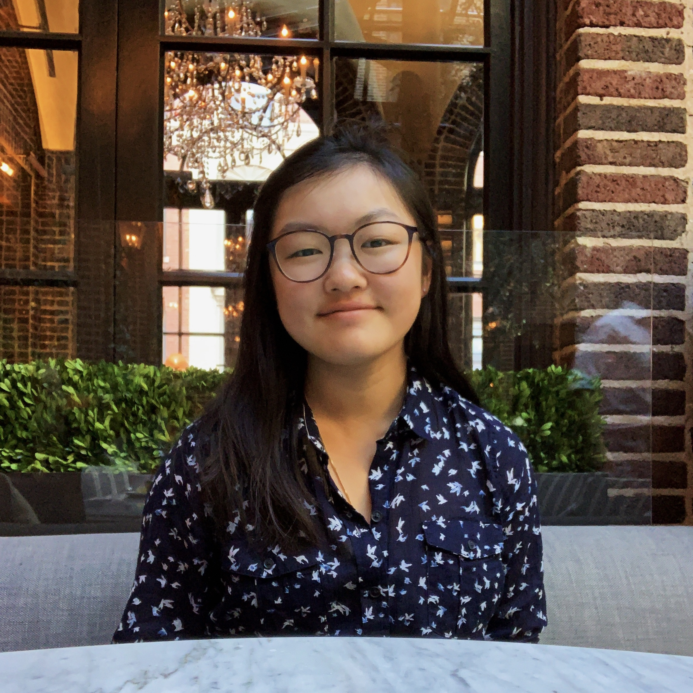

WELCOME

Hi, nice to meet you!
I’m Emma, a third-year student at Wellesley College majoring in Computer Science and minoring in Korean.
I love to create and my passion for this fuels my desire to make meaningful products. My love for game design and UI/UX development began as an 8th grader on Scratch. Between the HCI and game design courses I have taken, my time at Wellesley has allowed me to nurture my love of the intersection between art and technology.
Please note that this website would be best viewed on a laptop/desktop computer as it is not yet responsive to fit mobile screens. Sorry for the inconvenience!
Made by Emma Lim.